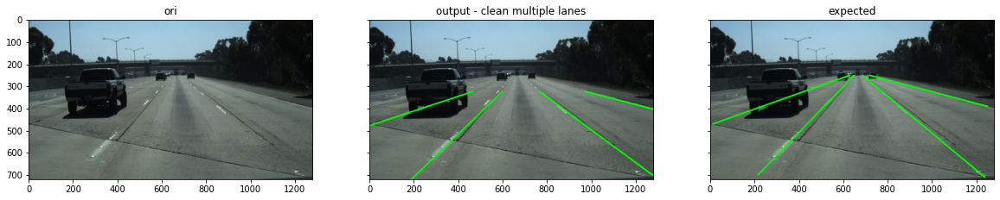
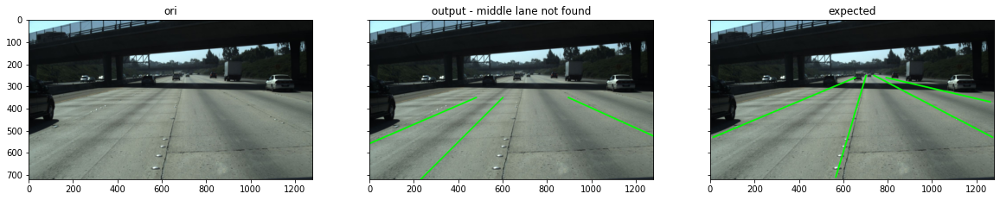
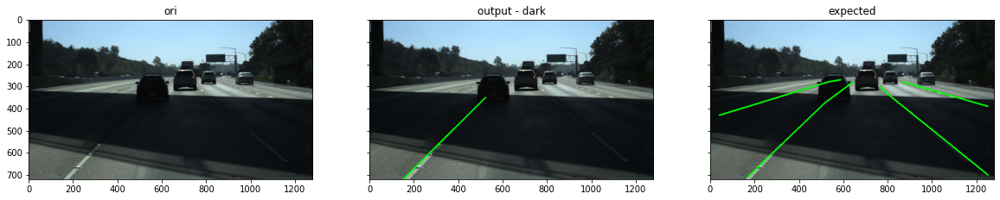
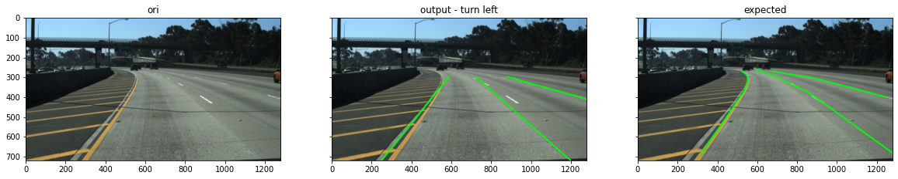
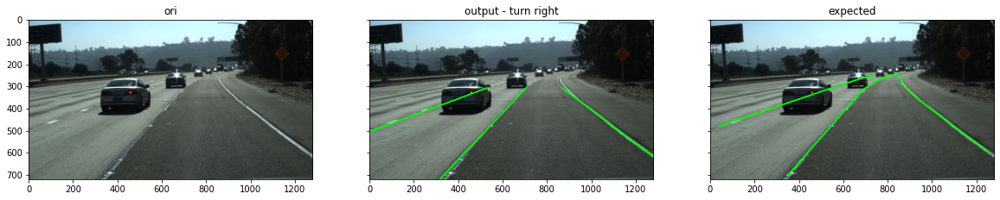
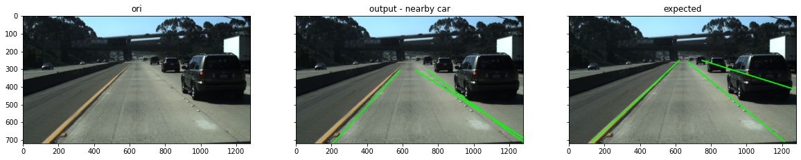
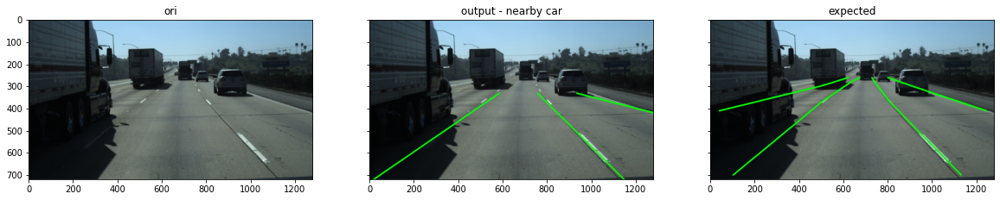

Lane detection
Contents
Table of Contents
Lane detection¶
import¶
from IPython.core.display import display, HTML
display(HTML("<style>.container { width:100% !important; }</style>"))
import numpy as np
import cv2 as cv
import cv2
import matplotlib.pyplot as plt
import math
def get_slope_intecept(lines):
y2 = lines[:, 3]
y1 = lines[:, 1]
x2 = lines[:, 2]
x1 = lines[:, 0]
slopes = (y2 - y1) / (x2 - x1 + 0.001) # y2 - y1 / x2 - x1
intercepts = y2 - slopes*x2 #((y2 + y1) - slopes * (x2 + x1)) / 2
#print(intercepts)
return slopes, intercepts
helper¶
def plot_one_img(img):
tmp = cv.cvtColor(img, cv.COLOR_BGR2RGB)
plt.imshow(tmp)
plt.show()
def display_two(img1, img2, t1="", t2=""):
fig, axes = plt.subplots(ncols=2, figsize=(20, 15), sharex=True, sharey=True)
ax = axes.ravel()
img1 = cv2.cvtColor(img1, cv.COLOR_BGR2RGB)
ax[0].imshow(img1, cmap=plt.cm.gray)
ax[0].set_title(t1)
ax[1].imshow(img2, cmap=plt.cm.gray)
ax[1].set_title(t2)
def display_three(img1, img2, img3, t1="", t2="", t3=""):
fig, axes = plt.subplots(ncols=3, figsize=(20, 15), sharex=True, sharey=True)
ax = axes.ravel()
img2 = cv2.cvtColor(img2, cv.COLOR_BGR2RGB)
ax[0].imshow(img1, cmap=plt.cm.gray)
ax[0].set_title(t1)
ax[1].imshow(img2, cmap=plt.cm.gray)
ax[1].set_title(t2)
ax[2].imshow(img3, cmap=plt.cm.gray)
ax[2].set_title(t3)
def display_expected(nth_img, nth_data_h_smaples, nth_data_lanes):
gt_lanes = [[(x, y) for (x, y) in zip(lane, nth_data_h_smaples) if x>=0] for lane in nth_data_lanes]
img_plot = nth_img.copy()
for lane in gt_lanes:
cv.polylines(img_plot, np.int32([lane]), isClosed=False, color=(0,255,0), thickness=5) #draw lines
return img_plot
y_sky = 330
y_max = 720
merge lines¶
def merge_lane_lines(lines, slope_similarity_threshold=0.1, intercept_similarity_threshold=40, min_slope_threshold=0.3, max_slope_threshold=5):
"""
Merges lane lines to output a single line per lane, using the slope and intercept as similarity measures.
Also, filters horizontal lane lines based on a minimum slope threshold.
Arguments:
lines -- tensor of dimension (N, 4) containing lines in the form of [x_1, y_1, x_2, y_2],
the coordinates of two points on the line.
Returns:
merged_lines -- tensor of dimension (N, 4) containing lines in the form of [x_1, y_1, x_2, y_2],
the coordinates of two points on the line.
"""
# Step 0: Define thresholds
clusters = []
current_inds = []
itr = 0
# Step 1: Get slope and intercept of lines
slopes, intercepts = get_slope_intecept(lines)
# Step 2: Determine lines with slope less than horizontal slope threshold.
slopes_horizontal = np.abs(slopes) > min_slope_threshold
slopes_vertical = np.abs(slopes) < max_slope_threshold
# Step 3: Iterate over all remaining slopes and intercepts and cluster lines that are close to each other using a slope and intercept threshold.
for slope, intercept in zip(slopes, intercepts):
in_clusters = np.array([itr in current for current in current_inds])
if not in_clusters.any():
slope_cluster = np.logical_and(slopes < (slope+slope_similarity_threshold), slopes > (slope-slope_similarity_threshold))
intercept_cluster = np.logical_and(intercepts < (intercept+intercept_similarity_threshold), intercepts > (intercept-intercept_similarity_threshold))
inds = np.argwhere(slope_cluster & intercept_cluster & slopes_horizontal & slopes_vertical).T
if inds.size:
current_inds.append(inds.flatten())
clusters.append(lines[inds])
itr += 1
# Step 4: Merge all lines in clusters using mean averaging
merged_lines = [np.mean(cluster, axis=1) for cluster in clusters]
merged_lines = np.array(merged_lines).reshape((-1, 4))
return merged_lines
houghtransform¶
find close lines¶
def find_closest_lines(lines, point):
x0, y0 = point
distances = []
for line in lines:
x1, y1, x2, y2 = line[0], line[1], line[2], line[3]
distances.append(((x2 - x1) * (y1 - y0) - (x1 - x0) *
(y2 - y1)) / (np.sqrt((y2 - y1)**2 + (x2 - x1)**2)))
distances = np.abs(np.array(distances))
# print(distances[distances.argmin()])
thesh = 200
if distances[distances.argmin()] < thesh: # point to lines distance threshold
res = lines[distances.argmin()]
else:
return np.array([])
return res
extrapolate lines¶
def extrapolate_lines(lines, y_min, y_max):
slopes, intercepts = get_slope_intecept(lines)
new_lines = []
for slope, intercept, in zip(slopes, intercepts):
x1 = (y_min - intercept) / (slope + 0.0001)
x2 = (y_max - intercept) / (slope + 0.0001)
# filter lines
if x2 < 20 or x2 > 1200: # line in wrong direction, too far left / right
continue
if (x1 < 600 and x2 < 100) or (x1 > 600 and x2 > 1200): # distorted line
continue
# filter left lane too left / right too right
if (x1 < 300 and x2 < 300) or (x1 > 900 and x2 > 900): # distorted line
continue
# not side lane but inner two ones
slopes = (y_max - y_min) / (x2 - x1 + 0.001)
y_intercept = y_max - slopes*x2
y2_intercept = slopes * 1280 + y_intercept
if (y_intercept > 550 and x1 < 400) or (y2_intercept > 550 and x1 > 800): # differentiate based on intercept with left and right bound
dist = abs(x2 - x1)
if x1 < 0 :
dist = x2
if x1 > 1280:
dist = 1280 - x2
if (x1 > 1030 or x1 < 70) and (abs(x2 - x1) < 350 or dist > 830): # inner lane too short / long
continue
if (abs(x2 - x1) < 250) and (x1 > 800 or x1 < 400): # filter short lines - 220 px
continue
new_lines.append([x1, y_min, x2, y_max])
return np.array(new_lines)
cut lines¶
def line_y_intersection(lines):
'''
get y intercept between inner most two lines
'''
points_list = [np.array([300, 720]), np.array([1100, 720])]
tmp = []
for p in points_list:
l = find_closest_lines(lines, p)
tmp.append(l)
try:
line1 = tmp[0]
line2 = tmp[1]
line1 = ((line1[0], line1[1]), (line1[2], line1[3]))
line2 = ((line2[0], line2[1]), (line2[2], line2[3]))
xdiff = (line1[0][0] - line1[1][0], line2[0][0] - line2[1][0])
ydiff = (line1[0][1] - line1[1][1], line2[0][1] - line2[1][1])
def det(a, b):
return a[0] * b[1] - a[1] * b[0]
div = det(xdiff, ydiff)
if div == 0:
raise Exception('lines do not intersect')
d = (det(*line1), det(*line2))
x = det(d, xdiff) / div
y = det(d, ydiff) / div
return y + 70
except:
return 350
def cut_lines(lines, y_cut):
tmp = []
for l in lines:
tmp.append(l)
lines = np.array(tmp)
slopes, intercepts = get_slope_intecept(lines)
i = 0
for slope, intercept in zip(slopes, intercepts):
try:
lines[i][3] = y_cut # cut y2 to 400
lines[i][2] = (y_cut - intercept) / slope # sub y2 into line equal=tion to get x2
except:
print(1)
pass
i += 1
return lines
show lines¶
def display_lines(lines, w=1280, h=720):
for i in range(len(lines)):
x1 = lines[i][0]
y1 = lines[i][1]
x2 = lines[i][2]
y2 = lines[i][3]
slopes = (y2 - y1) / (x2 - x1 + 0.0001)
m = (float(y2-y1))/float((x2-x1) + 0.0001)
dist = math.sqrt((y1 -y2)**2 + (x1 - x2)**2)
angle = abs(math.degrees(math.atan(m)))
#print(angle)
#print(dist)
#print()
#print(slopes)
if abs(m) > 0:
xs = [x1,x2]
ys = [y1,y2]
plt.plot(xs,ys, 'r-')
plt.xlim(0, w)
plt.ylim(h, 0)
plt.show()
def filter_short_line(lines):
tmp = []
for i in range(len(lines)):
x1 = lines[i][0]
y1 = lines[i][1]
x2 = lines[i][2]
y2 = lines[i][3]
slopes = (y2 - y1) / (x2 - x1 + 0.0001)
m = (float(y2-y1))/float((x2-x1) + 0.0001)
angle = abs(math.degrees(math.atan(m)))
y_intercept = ((y2 + y1) - slopes * (x2 + x1)) / 2
print(y_intercept)
x_intercept = - y_intercept / m
dist = math.sqrt((y_intercept)**2 + (x_intercept)**2)
if dist > 900:
tmp.append(lines[i])
#print(dist)
return tmp
# #
# # Hough Transform
# rho = 2 # distance resolution in pixels of the Hough grid
# theta = 1 * np.pi/180 # angular resolution in radians of the Hough grid
# threshold = 15 # minimum number of votes (intersections in Hough grid cell)
# min_line_length = 10 #minimum number of pixels making up a line
# max_line_gap = 20 # maximum gap in pixels between connectable line segments
# #
def show_lines(canny_lines, is_merged=True, minL=10, maxG=30, is_final=False, is_demo=True, is_plot=False, thres=30):
if is_merged:
lines = cv.HoughLinesP(canny_lines,rho=1,theta=np.pi/180, threshold =30,minLineLength=10,maxLineGap=30)
lines = lines.reshape(lines.shape[0], lines.shape[1] * lines.shape[2]) # (row , corresponding grayscale
lines = merge_lane_lines(lines, intercept_similarity_threshold=100, slope_similarity_threshold=0.4, min_slope_threshold=0.15) # 0.3
if is_demo:
print("after merged")
display_lines(lines)
y_sky = 200
lines = extrapolate_lines(lines, y_max, y_sky)
if is_demo:
print("after extrapolate")
display_lines(lines)
points_list = [np.array([200, 720]), np.array([1100, 720]), np.array([0, 500]), np.array([1280, 500])]
tmp = []
for p in points_list:
l = find_closest_lines(lines, p)
# for t in tmp:
# if (l == t).all():
# l = find_closest_lines(lines, p, is_next=True)
if not l.any():
continue
tmp.append(l)
lines = tmp
if is_demo:
print("afer close line")
display_lines(lines)
lines = cut_lines(lines, y_cut=line_y_intersection(lines))
#
lines = merge_lane_lines(np.array(lines), intercept_similarity_threshold=100, slope_similarity_threshold=0.3, min_slope_threshold=0.15) # 0.3
lines = [list(l) for l in lines]
#
else:
lines = cv.HoughLinesP(canny_lines,rho=1,theta=np.pi/180, threshold =thres,minLineLength=minL,maxLineGap =maxG)
lines = lines.reshape(lines.shape[0], lines.shape[1] * lines.shape[2]) # (row , corresponding grayscale
if is_plot:
for i in range(len(lines)):
x1 = lines[i][0]
y1 = lines[i][1]
x2 = lines[i][2]
y2 = lines[i][3]
slopes = (y2 - y1) / (x2 - x1 + 0.0001)
m = (float(y2-y1))/float((x2-x1) + 0.0001)
dist = math.sqrt((y1 -y2)**2 + (x1 - x2)**2)
angle = abs(math.degrees(math.atan(m)))
#print(angle)
#print(dist)
#print()
#print(slopes)
if abs(m) > 0:
xs = [x1,x2]
ys = [y1,y2]
plt.plot(xs,ys, 'r-')
# plt.xlim(0, w)
# plt.ylim(h, 0)
plt.show()
return np.array(lines)
draw lines¶
def draw_lines(img, lines): # Draw the right and left lines on image
lines_output = lines.astype(int)
output = img.copy()
for l in lines_output:
x1, y1, x2, y2 = l
cv.line(output, (x1, y1), (x2, y2), (0,255, 0), thickness=5)
# plt.imshow(output)
return output
start¶
threshold¶
sobel operator¶
def abs_sobel_thresh(img, orient='x', thresh=(0,255)):
# Convert to grayscale
gray = cv.cvtColor(img, cv.COLOR_RGB2GRAY)
# Apply x or y gradient with the OpenCV Sobel() function
# and take the absolute value
if orient == 'x':
abs_sobel = np.absolute(cv.Sobel(gray, cv.CV_64F, 1, 0))
if orient == 'y':
abs_sobel = np.absolute(cv.Sobel(gray, cv.CV_64F, 0, 1))
# Rescale back to 8 bit integer
scaled_sobel = np.uint8(255*abs_sobel/np.max(abs_sobel))
# Create a copy and apply the threshold
binary_output = np.zeros_like(scaled_sobel)
# Here I'm using inclusive (>=, <=) thresholds, but exclusive is ok too
binary_output[(scaled_sobel >= thresh[0]) & (scaled_sobel <= thresh[1])] = 1
# Return the result
return binary_output
# gray = cv.imread("my_img/no_lane.png", 1)
# gradx_thresh = [15,255]
# gradx = abs_sobel_thresh(gray,orient='y',thresh = gradx_thresh)
# plt.imshow(gradx, cmap='gray')
canny no parameter¶
# https://www.pyimagesearch.com/2015/04/06/zero-parameter-automatic-canny-edge-detection-with-python-and-opencv/
def canny_no_parameter(img_canny):
gray_image = cv.cvtColor(img_canny, cv.COLOR_RGB2GRAY)
gray_image = cv.GaussianBlur(gray_image, (5,5), 0) # signma = 0
v = np.median(gray_image)
#---- Apply automatic Canny edge detection using the computed median----
sigma = 0.5
lower = int(max(0, (1.0 - sigma) * v))
upper = int(min(255, (1.0 + sigma) * v))
edged = cv.Canny(gray_image, lower, upper)
edged = cv.GaussianBlur(edged, (3,3), 0) # signma = 0
thresh = 20
edged[edged > thresh] = 255
edged[edged < thresh] = 0
edged[edged==255] = 1
return edged
# gray = cv.imread("my_img/no_lane.png", 1)
# #gray = cv.imread("test_lane.jpg", 1)
# c = canny_no_parameter(gray)
# plt.imshow(c, cmap='gray')
HSL¶
def hls_select(img, sthresh=(0, 255),lthresh=()):
# 1) Convert to HLS color space
hls_img = cv.cvtColor(img, cv.COLOR_RGB2HLS)
# 2) Apply a threshold to the S channel
L = hls_img[:,:,1]
S = hls_img[:,:,2]
# 3) Return a binary image of threshold result
binary_output = np.zeros_like(S)
binary_output[(S >= sthresh[0]) & (S <= sthresh[1])
& (L > lthresh[0]) & (L <= lthresh[1])] = 1
return binary_output
# img = cv.imread("my_img/no_lane.png", 1)
# hls = hls_select(img, sthresh=(20,255), lthresh=(50, 255))
# #s_binary = hls_select(img_copy, sthresh=(140, 255), lthresh=(120, 255))
# plt.imshow(hls, cmap='gray');
combine filter and show steps¶
def binary_pipeline(img):
img_copy = cv.GaussianBlur(img, (5, 5), 0)
img_copy = cv2.cvtColor(img_copy, cv.COLOR_BGR2RGB)
# color channels
saturation = hls_select(img, sthresh=(20,255), lthresh=(50, 255))
# Sobel x
x_binary = abs_sobel_thresh(img_copy,thresh=(15, 200))
y_binary = abs_sobel_thresh(img_copy,thresh=(15, 200), orient='y')
# adapthive canny
canny_th = canny_no_parameter(img_copy)
# Stack each channel
base = np.zeros_like(saturation)
base[((x_binary == 1) & (y_binary == 1)) | canny_th==1 ] = 1
final_binary = cv.bitwise_or(saturation, base)
res = np.zeros_like(img)
canny_th[x_binary==1] = 1
canny_th[y_binary==1] = 1
final_binary[0:y_sky,] = 0 # ignore sky
return final_binary #final_binary
k means - image segmentation¶
from sklearn.cluster import KMeans
from sklearn.cluster import MiniBatchKMeans
def filter_cars(img, binary, is_demo=False):
# https://www.analyticsvidhya.com/blog/2019/04/introduction-image-segmentation-techniques-python/
reshaped = img.reshape(img.shape[0]*img.shape[1], img.shape[2])
kmeans = KMeans(n_clusters=3, random_state=0, max_iter=10, n_init=5).fit(reshaped)
#kmeans = MiniBatchKMeans(n_clusters=3, random_state=0, batch_size=30, max_iter=100).fit(pic_n)
km_cluster = kmeans.cluster_centers_[kmeans.labels_]
cluster = km_cluster.reshape(img.shape[0], img.shape[1], img.shape[2])
km_res = cluster.astype('uint8')
tmp = cv2.cvtColor(km_res, cv.COLOR_BGR2GRAY)
th = 40 # sit threshold to separate car and lane
tmp[tmp > th] = 255
tmp[tmp <= th] = 0
cleaned = cv2.medianBlur(tmp, 25)
if is_demo:
print("medianblur mask")
plt.imshow(cleaned, cmap="gray")
plt.show()
cleaned[cleaned==255] = 1
cleaned = cv2.erode(cleaned,(5,5),iterations=5) ## 55
binary[cleaned==0] = 0
if is_demo:
print("binary after masked")
plt.imshow(binary)
plt.show()
return binary
final¶
def final_pipline(img, is_demo=False, is_line=False):
res = binary_pipeline(img)
if is_demo:
print("binary")
plt.imshow(res)
plt.show()
res = filter_cars(img, res, is_demo=is_demo)
lines = show_lines(res, is_merged=False, minL=10, maxG=30, is_demo=False) # True - for show lines
lines_res = draw_lines(np.ones((720, 1280)), lines)
lines_res[lines_res==1]=255
lines_res[lines_res==0]=5
lines_res[lines_res==255]=0
lines_res[lines_res==5]=255
lines_res[:380,] = 0
lines_res = lines_res.astype(np.uint8)
lines_res = cv2.medianBlur(lines_res, 13)
if is_demo:
print("hough transform")
plt.imshow(lines_res)
plt.show()
try:
lines = show_lines(lines_res, is_merged=True, minL=100, maxG=10, is_demo=is_demo) # True
except:
pass # no lines found
img = cv.cvtColor(img, cv.COLOR_BGR2RGB)
if is_line:
return lines
return draw_lines(img, lines)
evaluate result¶
Methods and evaluation
Problem Definition
Detect lane given car angle daytime driving images
Pipeline
pre-processing
1) Original image is threshold via a combination of Sobel operator and canny
with adaptive parameters and HSL threshold (since L - lightness - white)
2) K means cluster used for creating a mask to remove car edges, erosion is used to make the mask slightly larger ,
MedianBlur is used to remove noise in the mask such as dirty on the road
lane detection
1) Hough transformation is applied to the threshold image and discontinuous lines are found
2) Lines detected is then merged based on their y intercept similarity, and slope similarity
the closest line to the four most possible lane position is chosen among the candidates lanes
3) the line is then extended until y = 200 and line is cut 70 pixels before the inner two lanes intersection
4) short lines, lines in opposite direction are filtered as well
json_0313 = [json.loads(line) for line in open('./train_set/label_data_0313.json')]
test_ = [398] # 84 (clean mulitple lanes), 10 (middle lane), 103 (dark), 398 (turn left with noise), 86 (turn right), 85 (nearby car) 321
for n in test_:
file_path = json_0313[n]["raw_file"]
img_path = f"train_set/{file_path}"
nth_img = plt.imread(img_path)
plt.imshow(nth_img)
nth_data = json_0313[n]
nth_data_h_smaples = nth_data["h_samples"]
nth_data_lanes = nth_data["lanes"]
expected = display_expected(nth_img, nth_data_h_smaples, nth_data_lanes)
res = final_pipline(nth_img, is_demo=True)
display_three(nth_img, res, expected, t1="ori", t2="output", t3="expected")
binary
medianblur mask
binary after masked
hough transform
after merged
after extrapolate
afer close line
discussion of performance
Evaluation and Results
Edge cases includes, shadow on lanes such as tree or driving under tunnel, turning, nearby vehicle that hiding the lane
perform well
1) straight lanes with nearby car reasonably distant
potential improvement
1) Curve line is approximated by straight line
2) not all lanes are detected
a) if there is close nearby car, shadow on the lane
test_ = [84, 10, 98, 398, 86, 85, 986] # 84 (clean mulitple lanes), 10 (middle lane), 98 (dark), 398 (turn left with noise), 86 (turn right), 85 (nearby car) , 982(car nearly)
test_desibe = ["clean multiple lanes", "middle lane not found", "dark", "turn left", "turn right", "nearby car", "nearby car"]
c = 0
for n in test_:
file_path = json_0313[n]["raw_file"]
img_path = f"train_set/{file_path}"
nth_img = plt.imread(img_path)
nth_data = json_0313[n]
nth_data_h_smaples = nth_data["h_samples"]
nth_data_lanes = nth_data["lanes"]
expected = display_expected(nth_img, nth_data_h_smaples, nth_data_lanes)
res = final_pipline(nth_img, is_demo=False)
display_three(nth_img, res, expected, t1="ori", t2="output - " + test_desibe[c], t3="expected")
c += 1







evulation¶
def output_json(output_lanes):
h_sample = [240, 250, 260, 270, 280, 290, 300, 310, 320, 330, 340,
350, 360, 370, 380, 390, 400, 410, 420, 430, 440, 450,
460, 470, 480, 490, 500, 510, 520, 530, 540, 550, 560,
570, 580, 590, 600, 610, 620, 630, 640, 650, 660, 670,
680, 690, 700, 710]#, "raw_file": "clips/0313-1/6040/20.jpg"}
lanes = []
for l in output_lanes:
lane_current = []
for h in h_sample:
x1, y1, x2, y2 = l
slope = (y2 - y1) / (x2 - x1 + 0.001)
intercept = y2 - slope * x2
x_expected = (h - intercept) / (slope + 0.0001)
if x1 < 0:
x1 = 0
if x1 > 1280:
x1 = 1280
if x2 < 0:
x2 = 0
if x2 > 1280:
x2 = 1280
if (x_expected >= x1 and x_expected <= x2) or (x_expected <= x1 and x_expected >= x2):
lane_current.append(int(x_expected))
else:
lane_current.append(-2)
lanes.append(lane_current)
return lanes
%%time
import random
random.seed(0)
randomlist = random.sample(range(1, 1000), 100)
Wall time: 0 ns
%%time
from evaluate.lane import LaneEval
test_ = randomlist # 84 (clean mulitple lanes), 10 (middle lane), 103 (dark), 398 (turn left with noise), 86 (turn right), 85 (nearby car) 321
def mean_(score):
return sum(score) / len(score)
def evaluate_lane(test_, json_0313):
acu_scores = []
fps = []
fns = []
for n in test_:
file_path = json_0313[n]["raw_file"]
img_path = f"train_set/{file_path}"
nth_img = plt.imread(img_path)
nth_data = json_0313[n]
nth_data_h_smaples = nth_data["h_samples"]
nth_data_lanes = nth_data["lanes"]
lines = final_pipline(nth_img, is_line=True)
lines = output_json(lines)
res = {"lanes":np.array(lines), "raw_files":file_path, "run_time":[0.1]}
json_pred = res
json_gt = nth_data
pred, gt = json_pred, json_gt
pred_lanes = pred['lanes']
run_time = pred['run_time']
gt_lanes = gt['lanes']
y_samples = gt['h_samples']
raw_file = gt['raw_file']
np.random.shuffle(pred_lanes)
# Overall Accuracy, False Positive Rate, False Negative Rate
measures = LaneEval.bench(pred_lanes, gt_lanes, y_samples, run_time)
acu_scores.append(measures[0])
fps.append(measures[1])
fns.append(measures[2])
return mean_(acu_scores), mean_(fps), mean_(fns)
avg_result = evaluate_lane(test_, json_0313)
Wall time: 5min 44s
def f1_score(fp, fn):
tp = 1 - fn
tn = 1 - fp
precision = tp / (tp + fp)
recall = tp / (tp + fn)
f1 = 2 * (precision * recall) / (precision + recall)
return f1
print(avg_result)
print(f1_score(avg_result[1], avg_result[2]))
#print (LaneEval.bench(pred_lanes, gt_lanes, y_samples, run_time))
(0.6551041666666667, 0.45163784822286274, 0.5625)
0.46317424682541
make videos¶
# import os
# #from tqdm import tqdm
# import cv2
# import numpy as np
# import matplotlib.pyplot as plt
# plt.ioff()
# out = cv2.VideoWriter('project.avi',cv2.VideoWriter_fourcc(*'XVID'), 30, (1280,720))
# for clips in sorted(os.listdir('./test_set/clips/')):
# for folders in sorted(os.listdir('./test_set/clips/'+clips)):
# for files in range(1,21):
# frame_original = cv2.imread('./test_set/clips/'+clips+'/'+folders+'/'+str(files)+'.jpg')
# res = final_pipline(frame_original)
# res = cv.cvtColor(res, cv.COLOR_BGR2RGB)
# out.write(res)
# out.release()
trial¶
# gray = cv2.cvtColor(km_res, cv.COLOR_RGB2GRAY)
# gray_r = gray.reshape(gray.shape[0]*gray.shape[1])
# gray_mean = 30 #gray_r.mean() - 50
# for i in range(gray_r.shape[0]):
# if gray_r[i] > gray_mean:
# gray_r[i] = 1
# else:
# gray_r[i] = 0
# gray = gray_r.reshape(gray.shape[0],gray.shape[1])
# plt.imshow(gray, cmap="gray")
# import scipy.ndimage as ndimage
# # defining the sobel filters
# sobel_horizontal = np.array([np.array([1, 2, 1]), np.array([0, 0, 0]), np.array([-1, -2, -1])])
# print(sobel_horizontal, 'is a kernel for detecting horizontal edges')
# sobel_vertical = np.array([np.array([-1, 0, 1]), np.array([-2, 0, 2]), np.array([-1, 0, 1])])
# out_h = ndimage.convolve(gray, sobel_horizontal, mode='reflect')
# out_v = ndimage.convolve(gray, sobel_vertical, mode='reflect')
# # here mode determines how the input array is extended when the filter overlaps a border.
# kernel_laplace = np.array([np.array([1, 1, 1]), np.array([1, -8, 1]), np.array([1, 1, 1])])
# out_l = ndimage.convolve(gray, kernel_laplace, mode='reflect')
# plt.imshow(out_l, cmap='gray')